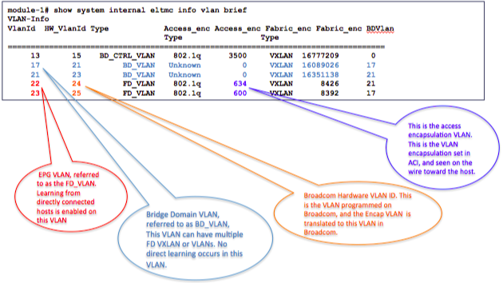
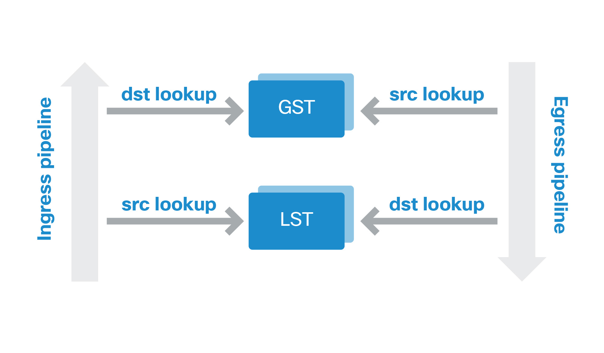
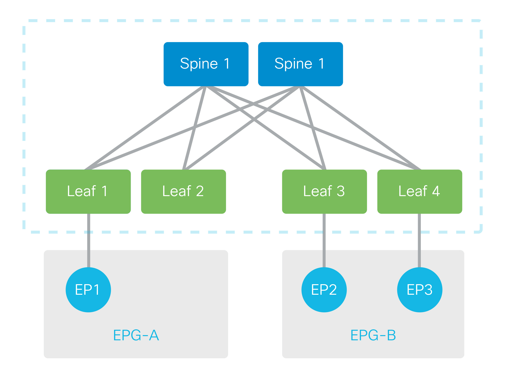
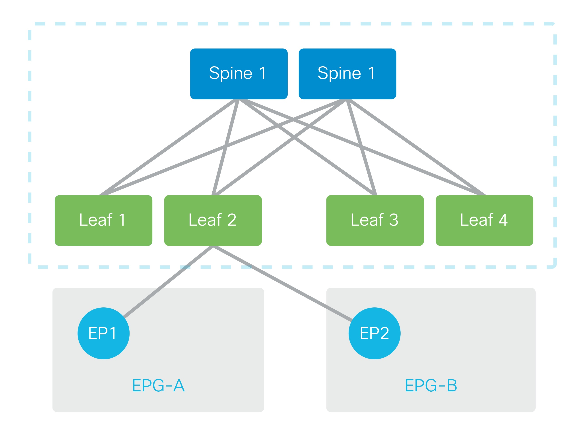
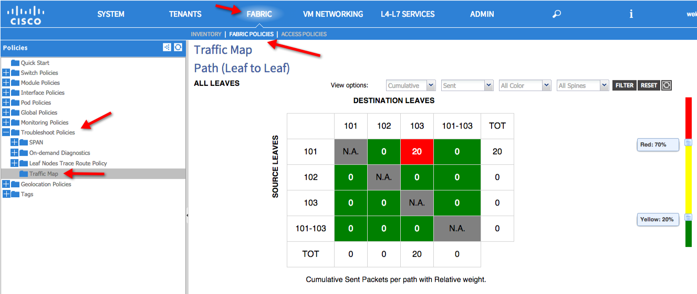
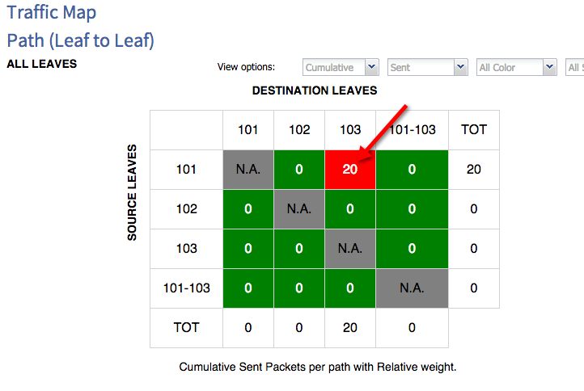

Unicast Data Plane Forwarding and Reachability¶
Overview¶
This chapter will cover unicast forwarding and reachability problems. This can be, but is not limited to, end points not showing up in the forwarding tables, end points not able to communicate with each other (non-zoning rule policy (contract) related problems), VLANs not being programmed, as well as incorrect configurations that can cause these problems and the subsequent faults that are raised.
To troubleshoot packet forwarding issues multiple shells will need to be used on a given leaf or spine.
- CLI: The CLI will be used to run the well-known VSH commands and check the concrete models on the switch. For example show vlan, show endpoint, etc...
- vsh_lc: This is the line card shell and it will be used to check line card processes and forwarding tables specific to the Application Leaf Engine (ALE) ASIC.
In the course of troubleshooting, several different VLAN types can be come across. A thorough deep dive on the different types of VLANs and their respective mappings is beyond the scope of this chapter and book, but summarized in the picture below are some of the more important concepts that are fundamental in understanding the use of VLANs in the ACI fabric. The output from the below command will be discussed in more detail later in this chapter, but the command was ran from the vsh_lc shell discussed above
{kind=link}
The show vlan extended command shows the VLANs described above map to the Bridge Domains and End Point Groups that have been configured on the fabric.
rtp_leaf1# show vlan extended
VLAN Name Status Ports
---- --------------------------------- --------- -------------------------------
13 infra:default active Eth1/1, Eth1/2, Eth1/5, Eth1/35 <--- Infra VLAN
17 Prod:Web active Eth1/27, Eth1/28, Po2, Po3 <--- BD_VLAN
21 Prod:MiddleWare active Eth1/27, Eth1/28, Po2, Po3 <--- BD_VLAN
22 Prod:commerceworkspace:Middleware active Eth1/27, Eth1/28, Po2, Po3 <--- EPG FD_VLAN
23 Prod:commerceworkspace:Web active Eth1/27, Eth1/28, Po2, Po3 <--- EPG FD_VLAN
VLAN Type Vlan-mode Encap
---- ----- ---------- -------------------------------
13 enet CE vxlan-16777209, vlan-3500<--- Encap VLAN for infra
17 enet CE vxlan-16089026
21 enet CE vxlan-16351138
22 enet CE vlan-634<--- Encap VLAN
23 enet CE vlan-600<---Encap VLAN
Additionally, an understanding of the forwarding tables in the ALE ASIC is useful when troubleshooting packet forwarding problems. The picture below depicts two tables, and the subsequent lookup that is performed on ingress and egress. There is a Local Station Table (LST) and a Global Station Table (GST). These two tables are unified for Layer 2 and Layer 3, and these entries can be displayed separately.
{kind=link}
Verification - Endpoints¶
To verify end point reachability the following commands can be used from the CLI. Notice the legend that details how that end point was learned. The below sample output displays end points learned locally (direct attached to the leaf) as well vPC attached.
rtp_leaf1# show endpoint
Legend:
O - peer-attached H - vtep a - locally-aged S - static
V - vpc-attached p - peer-aged L - local M - span
s - static-arp B - bounce
+---------------+---------------+-----------------+--------------+-------------+
VLAN/ Encap MAC Address MAC Info/ Interface
Domain VLAN IP Address IP Info
+---------------+---------------+-----------------+--------------+-------------+
Prod:Prod 10.0.0.101 L
27/Prod:Prod vlan-700 0026.f064.0000 LpV po1
27/Prod:Prod vlan-700 001b.54c2.2644 LpV po1
27/Prod:Prod vlan-700 0026.980a.df44 LV po1
27/Prod:Prod vlan-700 0000.0c9f.f2bc LV po1
35/Prod:Prod vlan-670 0050.56bb.0164 LV po2
29/Prod:Prod vlan-600 0050.56bb.cccf LV po2
34/Prod:Prod vlan-636 0000.0c9f.f2bc LV po2
34/Prod:Prod vlan-636 0026.980a.df44 LV po2
34/Prod:Prod vlan-636 0050.56bb.ba9a LV po2
Test:Test 10.1.0.101 L
overlay-1 172.16.136.95 L
overlay-1 172.16.136.96 L
13/overlay-1 vxlan-16777209 90e2.ba5a.9f30 L eth1/2
13/overlay-1 vxlan-16777209 90e2.ba4b.fc78 L eth1/1
The show mac address-table command can also can be used to confirm mac address learning and aging as shown below.
rtp_leaf1# show mac address-table
Legend:
* - primary entry, G - Gateway MAC, (R) - Routed MAC, O - Overlay MAC
age - seconds since last seen,+ - primary entry using vPC Peer-Link,
(T) - True, (F) - False
VLAN MAC Address Type age Secure NTFY Ports/SWID.SSID.LID
---------+-----------------+--------+---------+------+----+------------------
* 27 0026.f064.0000 dynamic - F F po1
* 27 001b.54c2.2644 dynamic - F F po1
* 27 0000.0c9f.f2bc dynamic - F F po1
* 27 0026.980a.df44 dynamic - F F po1
* 16 0050.56bb.0164 dynamic - F F po2
* 16 0050.56bb.2577 dynamic - F F po2
* 16 0050.56bb.cccf dynamic - F F po2
* 33 0050.56bb.cccf dynamic - F F po2
* 17 0026.980a.df44 dynamic - F F po2
* 17 0050.56bb.ba9a dynamic - F F po2
* 40 0050.56bb.f532 dynamic - F F po2
* 13 90e2.ba5a.9f30 dynamic - F F eth1/2
* 13 90e2.ba4b.fc78 dynamic - F F eth1/1
To verify end point reachability from the vsh_lc shell the following can be used command. Notice all the options that are available. To reduce the amount of output displayed, specific end points can be specified as the output can be quite extensive in a very large fabric. Alternatively output can be filter by using the Linux grep as well.
rtp_leaf1# vsh_lc
module-1# show system internal epmc endpoint ?
all Show information about all endpoints
interface Display interface information
ip IP address of the endpoint
key Key of the endpoint
mac MAC address of the endpoint
vlan VLAN info
vrf VRF of the endpoint
module-1# show system internal epmc endpoint all
VRF : overlay-1 ::: Context id : 4 ::: Vnid : 16777199
MAC : 90e2.ba4b.fc78 ::: Num IPs : 0
Vlan id : 13 ::: Vlan vnid : 16777209 ::: BD vnid : 16777209
VRF vnid : 16777199 ::: phy if : 0x1a000000 ::: tunnel if : 0
Interface : Ethernet1/1
VTEP tunnel if : N/A ::: Flags : 0x80004804
Ref count : 4 ::: sclass : 0
Timestamp : 01/02/1970 21:21:58.113891
EP Flags : local,MAC,class-set,timer,
Aging:Timer-type : Host-tracker timeout ::: Timeout-left : 399 ::: Hit-bit : Yes ::: Timer-reset count: 29
PD handles:
Bcm l2 hit-bit : Yes
[L2]: Asic : NS ::: BCM : Yes
::::
[snip]
------------------------------------------------
EPMC Endpoint Summary
----------------------------------------------
Total number of local endpoints : 7
Total number of remote endpoints : 0
Total number of peer endpoints : 0
Total number of cached endpoints : 0
Total number of config endpoints : 5
Total number of MACs : 5
Total number of IPs : 2
Verification - VLANs¶
The following commands can be used in the CLI to verify the VLANs programmed on the leaf. The show vlan extended command is very useful as it provides the BD_VLAN, FD_VLAN (EPG), and the encap used for the EPG FD_VLAN.
rtp_leaf1# show vlan
<CR> Carriage return
all-ports Show all ports on VLAN
brief All VLAN status in brief
extended VLAN extended info like encaps
id VLAN status by VLAN id
internal Show internal information of vlan-mgr
reserved Internal reserved VLANs
summary VLAN summary information
rtp_leaf1# show vlan extended
VLAN Name Status Ports
---- -------------------------------- --------- -------------------------------
13 infra:default active Eth1/1, Eth1/2, Eth1/5, Eth1/35
16 Prod:Web-FWctxProd active Eth1/27, Eth1/28, Po2, Po3
17 Prod:Web-FWctxProd active Eth1/27, Eth1/28, Po2, Po3
18 Prod:Web-LBctxProd active Eth1/27, Eth1/28, Po2, Po3
21 Prod:MiddleWare active Eth1/27, Eth1/28, Po2, Po3
22 Prod:commerceworkspace:Middleware active Eth1/27, Eth1/28, Po2, Po3
26 Prod:FWOutside active Eth1/27, Eth1/28, Eth1/42,
Eth1/44, Po1, Po2, Po3
27 -- active Eth1/42, Eth1/44, Po1
32 Prod:FWInside active Eth1/27, Eth1/28, Po2, Po3
33 Prod:commerceworkspace:FWInside active Eth1/27, Eth1/28, Po2, Po3
37 Prod:Web active Eth1/27, Eth1/28, Po2, Po3
40 Prod:commerceworkspace:Web active Eth1/27, Eth1/28, Po2, Po3
VLAN Type Vlan-mode Encap
---- ----- ---------- -------------------------------
13 enet CE vxlan-16777209, vlan-3500
16 enet CE vlan-637
17 enet CE vlan-671
18 enet CE vlan-603
21 enet CE vxlan-16351138
22 enet CE vlan-634
26 enet CE vxlan-15662984
27 enet CE vlan-700
32 enet CE vxlan-15597456
33 enet CE vlan-602
37 enet CE vxlan-16089026
40 enet CE vlan-600
The following commands can be used in vsh_lc shell to verify the VLANs are programmed on the ALE ASIC. The brief version of the VLAN command is also useful as it provides all the VLAN information in a single table.
rtp_leaf1# vsh_lc
module-1# show system internal eltmc info vlan ?
<0-4095> Vlan value
access_encap_vlan Vlan on the wire
access_encap_vnid Vnid on the wire
all Show information for all instances of object
brief Show brief information for all objects
fab_encap_vnid Vnid in the fabric
hw_vlan Vlan value in HW
summary Show summary for object
module-1# show system internal eltmc info vlan brief
VLAN-Info
VlanId HW_VlanId Type Access_enc Access_enc Fabric_enc Fabric_enc BDVlan
Type Type
==================================================================================
13 15 BD_CTRL_VLAN 802.1q 3500 VXLAN 16777209 0
16 28 FD_VLAN 802.1q 637 VXLAN 8429 26
17 25 FD_VLAN 802.1q 671 VXLAN 8463 32
18 29 FD_VLAN 802.1q 603 VXLAN 8395 32
21 23 BD_VLAN Unknown 0 VXLAN 16351138 21
22 24 FD_VLAN 802.1q 634 VXLAN 8426 21
26 26 BD_VLAN Unknown 0 VXLAN 15662984 26
27 27 FD_VLAN 802.1q 700 VXLAN 8192 26
32 30 BD_VLAN Unknown 0 VXLAN 15597456 32
33 31 FD_VLAN 802.1q 602 VXLAN 8394 32
37 21 BD_VLAN Unknown 0 VXLAN 16089026 37
40 32 FD_VLAN 802.1q 600 VXLAN 8392 37
The following command can be used in vsh_lc shell to verify the VLANs programmed on ALE ASIC. The output shows EPG FD_VLAN which has an encap value of 634. The FD_VLAN has a parent BD_VLAN of 21.
module-1# show system internal eltmc info vlan 22
vlan_id: 22 ::: hw_vlan_id: 24
vlan_type: FD_VLAN ::: bd_vlan: 21
access_encap_type: 802.1q ::: access_encap: 634
fabric_encap_type: VXLAN ::: fabric_encap: 8426
sclass: 16389 ::: scope: 4
bd_vnid: 8426 ::: untagged: 0
acess_encap_hex: 0x27a ::: fabric_enc_hex: 0x20ea
pd_vlan_ft_mask: 0x4f
bcm_class_id: 16 ::: bcm_qos_pap_id: 1024
qq_met_ptr: 2 ::: seg_label: 0
ns_qos_map_idx: 0 ::: ns_qos_map_pri: 1
ns_qos_map_dscp: 0 ::: ns_qos_map_tc: 0
vlan_ft_mask: 0x30
NorthStar Info:
qq_tbl_id: 1808 ::: qq_ocam: 0
seg_stat_tbl_id: 0 ::: seg_ocam: 0
The same command can be used to display BD_VLAN 21 from the above display is the parent VLAN of FD_VLAN 22. Displaying this VLAN provides important information with regards to the forwarding behavior for this Bridge Domain. It can be seen that this BD has been left to the default forwarding L3 behavior. Remember that the BD_VLAN and FD_VLAN is only locally significant to a single leaf.
module-1# show system internal eltmc info vlan 21
vlan_id: 21 ::: hw_vlan_id: 23
vlan_type: BD_VLAN ::: bd_vlan: 21
access_encap_type: Unknown ::: access_encap: 0
fabric_encap_type: VXLAN ::: fabric_encap: 16351138
sclass: 32773 ::: scope: 4
bd_vnid: 16351138 ::: untagged: 0
acess_encap_hex: 0 ::: fabric_enc_hex: 0xf97fa2
vrf_fd_list: 22,
pd_vlan_ft_mask: 0
bcm_class_id: 0 ::: bcm_qos_pap_id: 0
qq_met_ptr: 0 ::: seg_label: 0
ns_qos_map_idx: 0 ::: ns_qos_map_pri: 0
ns_qos_map_dscp: 0 ::: ns_qos_map_tc: 0
vlan_ft_mask: 0x7f
fwd_mode: bridge, route
arp_mode: unicast
unk_mc_flood: 1
unk_uc_mode: proxy
NorthStar Info:
qq_tbl_id: 2040 ::: qq_ocam: 0
seg_stat_tbl_id: 149 ::: seg_ocam: 0
flood_encap: 29 ::: igmp_mld_encap: 33
Using the same command sequence and displaying FD_VLAN 33 shows that the parent BD_VLAN is 32. Displaying the BD_VLAN shows that this BD forwarding behavior has been changed for L2 forwarding and flooding.
module-1# show system internal eltmc info vlan 33
vlan_id: 33 ::: hw_vlan_id: 31
vlan_type: FD_VLAN ::: bd_vlan: 32
access_encap_type: 802.1q ::: access_encap: 602
fabric_encap_type: VXLAN ::: fabric_encap: 8394
sclass: 16394 ::: scope: 4
bd_vnid: 8394 ::: untagged: 0
acess_encap_hex: 0x25a ::: fabric_enc_hex: 0x20ca
pd_vlan_ft_mask: 0x4f
bcm_class_id: 16 ::: bcm_qos_pap_id: 1024
qq_met_ptr: 7 ::: seg_label: 0
ns_qos_map_idx: 0 ::: ns_qos_map_pri: 1
ns_qos_map_dscp: 0 ::: ns_qos_map_tc: 0
vlan_ft_mask: 0x30
NorthStar Info:
qq_tbl_id: 1417 ::: qq_ocam: 0
seg_stat_tbl_id: 0 ::: seg_ocam: 0
This is the display of the BD_VLAN showing the forwarding has been changed for layer 2 (bridged):
module-1# show system internal eltmc info vlan 32
vlan_id: 32 ::: hw_vlan_id: 30
vlan_type: BD_VLAN ::: bd_vlan: 32
access_encap_type: Unknown ::: access_encap: 0
fabric_encap_type: VXLAN ::: fabric_encap: 15597456
sclass: 16393 ::: scope: 4
bd_vnid: 15597456 ::: untagged: 0
acess_encap_hex: 0 ::: fabric_enc_hex: 0xedff90
vrf_fd_list: 18,17,33,
pd_vlan_ft_mask: 0
bcm_class_id: 0 ::: bcm_qos_pap_id: 0
qq_met_ptr: 0 ::: seg_label: 0
ns_qos_map_idx: 0 ::: ns_qos_map_pri: 0
ns_qos_map_dscp: 0 ::: ns_qos_map_tc: 0
vlan_ft_mask: 0x7f
fwd_mode: bridge
arp_mode: flood
unk_mc_flood: 1
unk_uc_mode: flood
NorthStar Info:
qq_tbl_id: 1672 ::: qq_ocam: 0
seg_stat_tbl_id: 452 ::: seg_ocam: 0
flood_encap: 36 ::: igmp_mld_encap: 37
Verfication - Forwarding Tables¶
From the CLI the show endpoint command can be used determine how the endpoint are being learned. In the below example all the endpoints are locally learned (L).
rtp_leaf1# show endpoint
Legend:
O - peer-attached H - vtep a - locally-aged S - static
V - vpc-attached p - peer-aged L - local M - span
s - static-arp B - bounce
+---------------+---------------+-----------------+--------------+-------------+
VLAN/ Encap MAC Address MAC Info/ Interface
Domain VLAN IP Address IP Info
+---------------+---------------+-----------------+--------------+-------------+
Prod:Prod 10.0.0.101 L
27/Prod:Prod vlan-700 0026.f064.0000 LpV po1
27/Prod:Prod vlan-700 001b.54c2.2644 LpV po1
27/Prod:Prod vlan-700 0026.980a.df44 LV po1
27/Prod:Prod vlan-700 0000.0c9f.f2bc LV po1
35/Prod:Prod vlan-670 0050.56bb.0164 LV po2
29/Prod:Prod vlan-600 0050.56bb.cccf LV po2
34/Prod:Prod vlan-636 0000.0c9f.f2bc LV po2
34/Prod:Prod vlan-636 0026.980a.df44 LV po2
34/Prod:Prod vlan-636 0050.56bb.ba9a LV po2
Test:Test 10.1.0.101 L
overlay-1 172.16.136.95 L
overlay-1 172.16.136.96 L
13/overlay-1 vxlan-16777209 90e2.ba5a.9f30 L eth1/2
13/overlay-1 vxlan-16777209 90e2.ba4b.fc78 L eth1/1
From the vsh_lc shell the following commands can be used to examine the forwarding tables. Remember from the overview there are two forwarding tables of interest on the ALE ASIC, the GST and LST. These are unified tables for L2 and L3. The ingress and egress pipelines can be displayed separately as shown below.
For the output below, when the ingress direction is specified these are packets originating from the fabric, and when egress direction is specfied, it refers to packets originating from the front panel ports.
module-1# show platform internal ns forwarding lst-l2 ingress
================================================================================
TABLE INSTANCE : 0
================================================================================
Legend:
POS: Entry Position O: Overlay Instance
V: Valid Bit MD/PT: Mod/Port
PT: Pointer Type(A=Adj, E=ECMP, D=DstEncap N=Invalid)
PTR: ECMP/Adj/DstEncap/MET pointer
ML: MET Last
ST: Static PTH: Num Paths
BN: Bounce CP: Copy To CPU
PA: Policy Applied PI: Policy Incomplete
DL: Dst Local SP: Spine Proxy
--------------------------------------------------------------------------------
MO SRC P M S B C P P D S
POS O VNID Address V DE MD/PT CLSS T PTR L T PTH N P A I L P
--------------------------------------------------------------------------------
253 0 eeff88 00:26:98:0a:df:44 1 0 00/15 4007 A 0 0 0 1 0 0 0 0 0 0
479 0 edff90 00:00:0c:9f:f2:bc 1 0 00/13 400f A 0 0 0 1 0 0 0 0 0 0
693 0 eeff88 00:00:0c:9f:f2:bc 1 0 00/15 4007 A 0 0 0 1 0 0 0 0 0 0
848 0 edff90 00:50:56:bb:cc:cf 1 0 00/13 400a A 0 0 0 1 0 0 0 0 0 0
919 0 edff90 00:26:98:0a:df:44 1 0 00/13 400f A 0 0 0 1 0 0 0 0 0 0
1271 0 f97fa2 00:22:bd:f8:19:ff 1 0 00/00 1 A 0 0 1 1 0 0 0 1 0 0
1306 0 eeff88 00:1b:54:c2:26:44 1 0 00/15 4007 A 0 0 0 1 0 0 0 0 0 0
1327 0 edff90 00:50:56:bb:ba:9a 1 0 00/13 400f A 0 0 0 1 0 0 0 0 0 0
2421 0 f57fc2 00:50:56:bb:f5:32 1 0 00/13 8004 A 0 0 0 1 0 0 0 0 0 0
3942 0 eeff88 00:26:f0:64:00:00 1 0 00/15 4007 A 0 0 0 1 0 0 0 0 0 0
4083 0 eeff88 00:50:56:bb:01:64 1 0 00/13 4010 A 0 0 0 1 0 0 0 0 0 0
module-1# show platform internal ns forwarding lst-l2 egress
================================================================================
TABLE INSTANCE : 1
================================================================================
Legend:
POS: Entry Position O: Overlay Instance
V: Valid Bit MD/PT: Mod/Port
PT: Pointer Type(A=Adj, E=ECMP, D=DstEncap N=Invalid)
PTR: ECMP/Adj/DstEncap/MET pointer
ML: MET Last
ST: Static PTH: Num Paths
BN: Bounce CP: Copy To CPU
PA: Policy Applied PI: Policy Incomplete
DL: Dst Local SP: Spine Proxy
--------------------------------------------------------------------------------
MO SRC P M S B C P P D S
POS O VNID Address V DE MD/PT CLSS T PTR L T PTH N P A I L P
--------------------------------------------------------------------------------
253 0 eeff88 00:26:98:0a:df:44 1 0 00/00 4007 A 10 0 0 1 0 0 0 0 1 0
479 0 edff90 00:00:0c:9f:f2:bc 1 0 00/00 400f A 13 0 0 1 0 0 0 0 1 0
693 0 eeff88 00:00:0c:9f:f2:bc 1 0 00/00 4007 A 10 0 0 1 0 0 0 0 1 0
848 0 edff90 00:50:56:bb:cc:cf 1 0 00/00 400a A 14 0 0 1 0 0 0 0 1 0
919 0 edff90 00:26:98:0a:df:44 1 0 00/00 400f A 13 0 0 1 0 0 0 0 1 0
1306 0 eeff88 00:1b:54:c2:26:44 1 0 00/00 4007 A 10 0 0 1 0 0 0 0 1 0
1327 0 edff90 00:50:56:bb:ba:9a 1 0 00/00 400f A 13 0 0 1 0 0 0 0 1 0
2421 0 f57fc2 00:50:56:bb:f5:32 1 0 00/00 8004 A 12 0 0 1 0 0 0 0 1 0
3942 0 eeff88 00:26:f0:64:00:00 1 0 00/00 4007 A 10 0 0 1 0 0 0 0 1 0
4083 0 eeff88 00:50:56:bb:01:64 1 0 00/00 4010 A 11 0 0 1 0 0 0 0 1 0
module-1# show platform internal ns forwarding lst-l3 ingress
===========================================================================
TABLE INSTANCE : 0
===========================================================================
Legend:
POS: Entry Position O: Overlay Instance
V: Valid Bit MD/PT: Mod/Port
PT: Pointer Type(A=Adj, E=ECMP, D=DstEncap N=Invalid)
PTR: ECMP/Adj/DstEncap/MET pointer
ML: MET Last
ST: Static PTH: Num Paths
BN: Bounce CP: Copy To CPU
PA: Policy Applied PI: Policy Incomplete
DL: Dst Local SP: Spine Proxy
--------------------------------------------------------------------------------
MO SRC P M S B C P P D S
POS O VNID Address V DE MD/PT CLSS T PTR L T PTH N P A I L P
--------------------------------------------------------------------------------
3142 0 268000 10.1.2.1 1 0 00/00 1 A 0 0 1 1 0 0 0 1 0 0
module-1# show platform internal ns forwarding lst-l3 egress
<no output>
module-1# show platform internal ns forwarding gst-l2 ingress
===========================================================================
TABLE INSTANCE : 0
===========================================================================
Legend:
POS: Entry Position O: Overlay Instance
V: Valid Bit MD/PT: Mod/Port
PT: Pointer Type(A=Adj, E=ECMP, D=DstEncap N=Invalid)
PTR: ECMP/Adj/DstEncap/MET pointer
ML: MET Last
ST: Static PTH: Num Paths
BN: Bounce CP: Copy To CPU
PA: Policy Applied PI: Policy Incomplete
DL: Dst Local SP: Spine Proxy
--------------------------------------------------------------------------------
MO SRC P M S B C P P D S
POS O VNID Address V DE MD/PT CLSS T PTR L T PTH N P A I L P
--------------------------------------------------------------------------------
4095 0 eeff88 00:50:56:bb:01:64 1 0 00/00 4010 A 11 0 0 1 0 0 0 0 1 0
4261 0 edff90 00:26:98:0a:df:44 1 0 00/00 400f A 13 0 0 1 0 0 0 0 1 0
4354 0 edff90 00:50:56:bb:ba:9a 1 0 00/00 400f A 13 0 0 1 0 0 0 0 1 0
4476 0 eeff88 00:26:98:0a:df:44 1 0 00/00 4007 A 10 0 0 1 0 0 0 0 1 0
4672 0 f57fc2 00:50:56:bb:f5:32 1 0 00/00 8004 A 12 0 0 1 0 0 0 0 1 0
7190 0 eeff88 00:00:0c:9f:f2:bc 1 0 00/00 4007 A 10 0 0 1 0 0 0 0 1 0
7319 0 eeff88 00:26:f0:64:00:00 1 0 00/00 4007 A 10 0 0 1 0 0 0 0 1 0
7631 0 edff90 00:00:0c:9f:f2:bc 1 0 00/00 400f A 13 0 0 1 0 0 0 0 1 0
7742 0 edff90 00:50:56:bb:25:77 1 0 00/00 400f A 13 0 0 1 0 0 0 0 1 0
7910 0 edff90 00:1b:54:c2:26:44 1 0 00/00 400f A 13 0 0 1 0 0 0 0 1 0
7999 0 eeff88 00:1b:54:c2:26:44 1 0 00/00 4007 A 10 0 0 1 0 0 0 0 1 0
8167 0 eeff88 00:50:56:bb:25:77 1 0 00/00 4010 A 11 0 0 1 0 0 0 0 1 0
module-1# show platform internal ns forwarding gst-l2 egress
<no output>
module-1# show platform internal ns forwarding gst-l3 ingress
==========================================================================
TABLE INSTANCE : 0
==========================================================================
Legend:
POS: Entry Position O: Overlay Instance
V: Valid Bit MD/PT: Mod/Port
PT: Pointer Type(A=Adj, E=ECMP, D=DstEncap N=Invalid)
PTR: ECMP/Adj/DstEncap/MET pointer
ML: MET Last
ST: Static PTH: Num Paths
BN: Bounce CP: Copy To CPU
PA: Policy Applied PI: Policy Incomplete
DL: Dst Local SP: Spine Proxy
--------------------------------------------------------------------------------
MO SRC P M S B C P P D S
POS O VNID Address V DE MD/PT CLSS T PTR L T PTH N P A I L P
--------------------------------------------------------------------------------
562 0 268000 10.0.0.9 1 0 00/00 1 A c 0 0 1 0 0 0 0 1 0
563 0 268000 10.0.0.1 1 0 00/00 1 A e 0 0 1 0 0 0 0 1 0
2312 0 2c0000 10.0.1.11 1 0 00/00 1 A 2 0 0 1 0 0 0 0 1 0
2313 0 2c0000 10.0.1.3 1 0 00/00 1 A 2 0 0 1 0 0 0 0 1 0
4580 0 2c0000 10.0.1.9 1 0 00/00 1 A d 0 0 1 0 0 0 0 1 0
4581 0 2c0000 10.0.1.1 1 0 00/00 1 A f 0 0 1 0 0 0 0 1 0
6878 0 268000 10.0.0.11 1 0 00/00 1 A 2 0 0 1 0 0 0 0 1 0
6879 0 268000 10.0.0.3 1 0 00/00 1 A 2 0 0 1 0 0 0 0 1 0
module-1# show platform internal ns forwarding gst-l3 egress
<no output>
Problem Description¶
Issues when using Atomic counters as an aid in troubleshooting
Verification¶
There are several areas to verify.
- NTP must be configured and working correctly within the fabric for Atomic Counters to work.
- Endpoints must be learned by the leaf switch. Attach to the leaf command line and issue show endpoint and confirm that there is a L next to the endpoints the Atomic Counter Policy will be configured.
- The endpoints must be sending traffic in one or both directions before Atomic Counters can display the packet counts.
- The endpoints must reside on different leafs. Counted packets must traverse the ACI Spine switches. Locally switched packets are not counted by Atomic Counters. The packet must traverse the ALE ASICs.
- Atomic Counters are not supported when the endpoints are in different VRFs (also known as different Contexts). This implies that Atomic Counters are not supported between endpoints that reside in different tenants.
In the diagram below, On-demand Atomic Counters are available for troubleshooting between EPG-A and EPG-B, and between any of the EPs
{kind=link}
In the diagram below On-demand Atomic Counters would only update the transmit counter. Drops or excess packets could not be counted.
{kind=link}
Packet counts are updated in 30 second intervals, so wait at least 30 seconds before expecting to see any counters incrementing.
Complete Atomic Counter restrictions are documented in the Cisco APIC Troubleshooting Guide.
On Demand Atomic Counters are available in Fabric->Fabric Policies-> Troubleshooting Policies->Traffic Map as shown below.
{kind=link}
Click on the Leaf to Leaf traffic as shown below.
{kind=link}
{kind=link}
Problem Description¶
Layer 2 or layer 3 forwarding issues are occurring
Verification¶
- Use the steps in the verification section, and verify
- End point reachability
- VLAN Programming
- BD_VLAN forwarding behavior
- GST and LST L2 Forwarding Tables.
- For additional Troubleshooting Tips see “Routed Connectivity to External Networks” chapter. This chapter demonstrates the use of other commands such as show vpc.
Symptom 2 Layer 3 forwarding issues are occurring
Verification
- Use the steps in the verification section, and verify
- End point reachability
- VLAN Programming
- BD_VLAN forwarding behavior
- GST and LST L3 Forwarding Tables.
- For additional Troubleshooting Tips see “Bridged Connectivity to External Networks” chapter. This chapter demonstrates the use of other commands such as show ip route vrf.